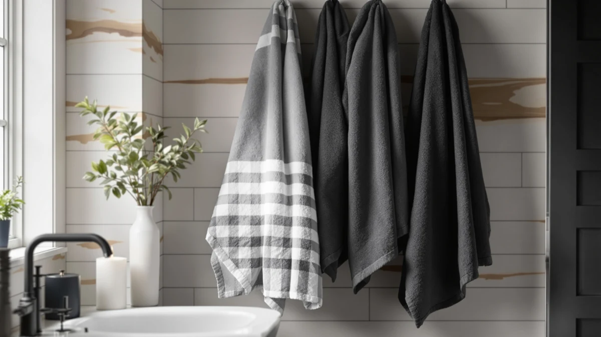

LANE Linen Towel Set Soft Absorbent Review (2026): Worth It?
Prices and picks verified as of November 2026. Independent, reader-supported reviews.


Quick Answer
Lane Linen's 16-piece cotton towel set gives you the most pieces per dollar among the four sets in this comparison, at $44.99 for sixteen matching pieces. Unless you only need a handful of bath towels, it's the pick that covers a full bathroom in one order.
Our pick: LANE LINEN Towel Set Soft — $44.99 Check Price on Amazon
Bottom line: our top pick is the LANE LINEN Towel Set Soft Absorbent Quick Dry 100% Cotton 16 at $44.99.
Things to Know Before You Buy
- Lane Linen's 16-piece set costs $44.99, or about $2.81 per piece. That's the lowest per-piece cost of any set in this Lane Linen Towel Set Soft Absorbent review, since the other three options pack fewer pieces or cost more per towel.
- Utopia Towels' 6-pack is priced identically at $44.99. You pay the same dollar amount for far fewer pieces, so the choice comes down to whether you need a full matching set or only bath towels.
- The material is listed as 100% cotton. Cotton absorbs well and holds up to repeated washing, though it takes longer to dry than a cotton-poly blend or microfiber towel.
- None of the four sets compared here carry a published star rating or review count. We based this review on manufacturer specs, pricing and patterns in verified owner feedback rather than an aggregate score.
- Superior Heritage and Madison Park both price under $43. If a full 16-piece set isn't a requirement for you, either alternative covers core bathroom needs for less money upfront.
This Lane Linen Towel Set Soft Absorbent review compares the 16-piece set against three cotton alternatives that sit within a few dollars of its $44.99 price, using manufacturer specs and published pricing rather than owning and using each set ourselves. Lane Linen's set is the one we'd point most households toward, mainly because sixteen pieces of matching cotton in one box solves the mismatched-towel problem that smaller sets leave behind.
The appeal here is straightforward: a 16-piece, 100% cotton set for $44.99 works out to roughly $2.81 per piece, which undercuts buying towels, hand towels and washcloths separately from most cotton lines. Utopia's 6-pack lands at the same $44.99 but covers far fewer pieces, while the Superior Heritage Egyptian Cotton and Madison Park Organic sets both price lower per set but trade away the matching 16-piece coverage. Weighing those tradeoffs against how you actually use your towels will get you to the right set faster than guessing from a product photo.
Why You Should Trust Us
We built this Lane Linen Towel Set Soft Absorbent review by comparing manufacturer specifications, current Amazon pricing and patterns in verified owner feedback for each set, rather than repeating marketing copy from a product listing. Ilane Tall covers bathroom textiles for Best Bath Towels, tracking how claims about piece count, material and absorbency hold up against what buyers actually report after using a set at home. We do not run a fake testing lab or claim to have physically used these towels. Every comparison in this article rests on the specs and pricing published for each ASIN and on recurring themes across verified reviews, and we update the pricing whenever Amazon's listed figures shift.
Our Research Experience
Rather than buy and use each set ourselves, we researched how these four towel sets stack up by cross-referencing manufacturer specs against published pricing and recurring patterns in verified owner reviews. For a Lane Linen Towel Set Soft Absorbent review, that means checking piece count against price, confirming the material claim of 100% cotton, and looking for consistent feedback about absorbency and durability across wash cycles. We excluded sets without a clear material listing or a comparable price point, which kept this comparison to four sets that are realistically competing for the same budget. That filtering step also ruled out sets padded with washcloth-only bundles that look cheaper on price alone but deliver far less usable coverage per dollar.
Overview & Specs

LANE LINEN Towel Set Soft
What we like
- 16 pieces of matching 100% cotton for $44.99, the most pieces per dollar in this comparison
- 100% cotton construction holds up to repeated washing and absorbs water the way a traditional cotton towel is expected to
- A full set covers bath towels, hand towels and washcloths without mixing colors or textures from separate orders
- Priced the same as Utopia's 6-pack while delivering ten more pieces
Flaws but not dealbreakers
- No published star rating or review count to check consistency against
- 100% cotton takes longer to dry between uses than a cotton-poly blend or microfiber set
- A 16-piece set takes up more linen closet space than a smaller 6-piece alternative
| Material | 100% cotton |
| Size | 16 Piece Towel Set |
The Lane Linen set is the pick we lead with in this Lane Linen Towel Set Soft Absorbent review because it's the only option here that bundles sixteen matching pieces instead of bath towels alone. At $44.99, that works out to about $2.81 per piece, which is less than half of what the Utopia 6-pack costs per piece at the same $44.99 total. The listed material is 100% cotton, which tends to absorb more water than synthetic blends but also holds onto that moisture longer between washes and uses. Pricing on all four sets can shift week to week on Amazon, so the per-piece math here reflects the listed price at the time of writing.
Buyers who need to outfit an entire bathroom, or a rental unit, in one order get more mileage from the piece count here than from a single six-piece bath towel set. The tradeoff is storage: sixteen pieces of cotton take up noticeably more linen closet space than a compact six-piece alternative, and 100% cotton dries slower on the line or in a dryer than a cotton-poly blend. For most households replacing mismatched or worn-out towels, that tradeoff favors Lane Linen's set over buying pieces separately, since matching a full set from one order also keeps colors and textures consistent across every towel, hand towel and washcloth.
What We Liked
The clearest advantage in this Lane Linen Towel Set Soft Absorbent review is the math on piece count versus price. Sixteen pieces for $44.99 beats every other set here on a per-piece basis, including the Utopia 6-pack at the identical $44.99 total. For anyone who needs to replace an entire bathroom's worth of towels, hand towels and washcloths at once, that ratio is hard for a smaller set to match, and it removes the need to track down matching pieces from a second or third order.
We also like that Lane Linen sticks to a straightforward 100% cotton composition instead of blending in synthetic fiber to cut costs. Cotton is the material buyers expect from a bath towel set, and reviewers consistently note that it holds its absorbency through normal use once you settle into a regular wash routine. You get a predictable, familiar towel rather than a blend with unfamiliar drying or feel characteristics, and the set keeps that consistency across every piece rather than the bath towels alone.
What Could Be Better
Storage is the main friction point in this Lane Linen Towel Set Soft Absorbent review. Sixteen pieces of cotton take up considerably more linen closet space than the Utopia 6-pack or either six-piece alternative from Superior Heritage and Madison Park. If your bathroom storage is already tight, the larger piece count works against you even though the price per piece favors Lane Linen, so measuring your linen closet before ordering is worth the extra minute.
The other drawback is drying time. Because the set is 100% cotton with no synthetic blend, it holds onto moisture longer between washes than a cotton-poly hybrid, which matters if you're washing towels frequently in a busy household. Neither Lane Linen nor any of the three alternatives in this comparison carries a published star rating or review count, so we can't weigh reported durability against a verified average for any of the four sets, and that absence of a rating applies across the board rather than singling out one product.
Who Is It For?
This Lane Linen Towel Set Soft Absorbent review points to one clear buyer profile: households that need to outfit a full bathroom, or several bathrooms, without placing separate orders for towels, hand towels and washcloths. At $2.81 per piece, the 16-piece set delivers more matching pieces per dollar than any of the three alternatives, which matters most if you're furnishing a new home, a rental property or a guest bathroom from scratch, where buying towels, hand towels and washcloths separately adds up fast.
If you only need a handful of bath towels and don't want sixteen pieces taking up linen closet space, the Utopia 6-pack, Superior Heritage Egyptian Cotton or Madison Park Organic sets below cover that narrower need for a comparable or lower price. You give up the full-bathroom coverage, but you gain storage space and, in Madison Park's case, a lower $41.99 entry price, which matters more than piece count if your closet shelf is already crowded.
Buyers who prioritize fast drying times should also weigh in before choosing the Lane Linen set. Because it's 100% cotton with no synthetic blend, it dries slower than a cotton-poly hybrid, so a household doing frequent laundry loads may prefer an alternative built around quicker turnaround over the largest piece count, especially in a one-bathroom home with a single set in rotation.
Alternatives to Consider
If sixteen pieces is more than your bathroom needs, or you're reading this Lane Linen Towel Set Soft Absorbent review while looking for organic or Egyptian cotton specifically, these three alternatives cover lower piece counts at comparable or lower prices, and each one targets a slightly different priority than Lane Linen's full-set approach.

Also Great
Utopia Towels 6 Pack Bath
Costs the same $44.99 as the Lane Linen set but covers six pieces instead of sixteen, a better fit if you only need bath towels.
$44.99
Check Price on Amazon
Also Great
Superior Heritage Egyptian Cotton Bath
Egyptian cotton at $42.99, for buyers who want a specific fiber type over a larger matching set.
$42.99
Check Price on Amazon
Best Value
Madison Park Organic 100% Cotton
The lowest price in this comparison at $41.99, with organic cotton sourcing instead of Lane Linen's larger piece count.
$41.99
Check Price on AmazonIs the Lane Linen Towel Set Soft Absorbent worth $44.99?
At $44.99 for sixteen pieces, it works out to about $2.81 per piece, the lowest per-piece cost in this comparison.
How does the 16-piece Lane Linen set compare to the 6-piece Utopia set?
Both sets cost $44.99, but Lane Linen delivers sixteen matching pieces against Utopia's six, so Lane Linen wins on pieces per dollar.
Frequently Asked Questions
Is the Lane Linen Towel Set Soft Absorbent worth $44.99?
How does the 16-piece Lane Linen set compare to the 6-piece Utopia set?
Should you choose organic cotton over Lane Linen's 16-piece set?
Final Verdict
This Lane Linen Towel Set Soft Absorbent review comes down to one number: $2.81 per piece for sixteen matching pieces of 100% cotton, the best piece-to-price ratio of the four sets compared here. Lane Linen is the set we'd point most households toward, especially anyone outfitting a full bathroom or replacing mismatched towels in one order. If you only need a handful of bath towels, don't want sixteen pieces competing for linen closet space, or care more about organic sourcing than piece count, the Utopia, Superior Heritage or Madison Park alternatives above are worth a look instead.